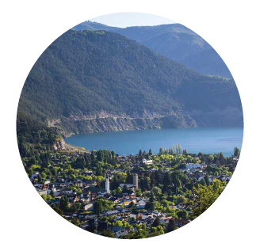
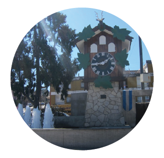

EMPRESA DE VIAJES Y TURISMO
EVT Leg. 17038
San Carlos de Bariloche, Río Negro - Argentina
Contactar
Bariloche
Otros Destinos
Villa Carlos Paz
Tarifas para
San Carlos de Bariloche
Río Negro
Programa Bariloche Nacionales
Verano 2020 en pesos
Programa Bariloche Receptivo
Verano 2020 en dolares
Avance Verano 2020
Turismo Nacional en pesos
Avance Verano 2020
Turismo Receptivo en dolares
Solo Alojamiento Bariloche
2020 Pesos
Solo Alojamiento Bariloche
2020 Dolares
Excursiones Bariloche
Verano-Otoño 2020
Alquiler de autos KM libres
Verano 2020
Descriptivo Excursiones Bariloche
Invierno-Primavera
Descriptivo Excursiones Bariloche
Verano-Otoño
Planes en cuotas
con Tarjetas de Crédito
Ahora 12
12 cuotas sin interes
Tarifas para
Otros Destinos
Cordilleranos

Alojamiento en Otros Destinos Cordilleranos
2020 Pesos
Alojamiento en Otros Destinos Cordilleranos
2020 Dolares
Programa Otros Destinos
Verano 2020 en pesos
Excursiones Otros Destinos
Verano-Otoño 2020
Alquiler de Autos NEUQUEN
Verano-Otoño 2020
Descriptivo Excursiones San Martín de los Andes
Temporada 2020
Descriptivo Excursiones Villa La Angostura
Temporada 2020
Descriptivo Excursiones El Bolsón
Temporada 2020
Descriptivo Excursiones Esquel
Temporada 2019
Descriptivo Excursiones Villa Pehuenia
Temporada 2020
Descriptivo Excursiones Chile-Puerto Montt y Puerto Varas
Temporada 2020
Tarifas para
Villa Carlos Paz &
Otros destinos serranos

Traslados y Excursiones desde VCPaz descriptivo
del 01-06-2018 al 31-08-2018
Traslados y Excursiones desde VCPaz descriptivo
del 18-02-2018 al 31-05-2018
Planes en cuotas
con Tarjetas de Crédito